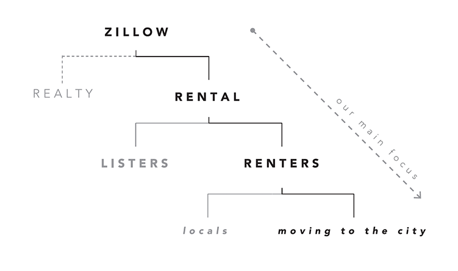

Zillow Places
Context
★ Finalist - Vancouver UX Awards 2016. Created as a part of a senior experience design course, in a team of 5, over the span of 4 weeks.
Role
UX, strategy, visual design, cartography design
Zillow places is a mobile-first platform that helps people find their ideal place to rent in a new city. Users are offered their best matches based on their specific needs and are provided a more personalized browsing experience online, bridging the gap between looking for a place and finally moving in.
Renting is frustrating
With housing prices on the rise, renting is becoming a reality for more and more people. Yet the process of renting hasn’t changed much in the past few years, it’s still a shot in the dark for most people and it’s only getting harder - especially in the context of moving from city to city and having to find a place remotely.
Zillow is the most visited real estate site in the US, but with homeownership trending down, it’s critical to capture the emerging rental market. Especially since eventually these renters will become buyers in the future, and providing a service that meets their needs will not only bring value to the user, but also to Zillow's ecosystem as a business and brand.
Getting to know our audience
We went into the rental market looking for an emerging, underserved audience. Following Ideo’s "Extremes and Mainstreams" methodology, we targetted the extreme use case of people moving from city to city and searching for places remotely. If the design resolved very stressful experiences, then casual users would also find it easier to use.

Some insights from our guerrilla user interviews regarding this frustration:
-"I had no idea about neighbourhoods. Would I be close to a grocery store, bar, park?"
-"Before I moved I was very frustrated with not being able to see places in person. I’m highly interested in the cultural significance of a neighbourhood, and wanted to explore where I would be living."
-"Finding this place was a lot of searching on Craigslist, and emailing, and hearing nothing back."
-"I kept track of [listings I emailed] with a google spreadsheet."
Lessons from other domains
We looked into dating apps and their approach to connect people to people. Dating apps have a sense of emotional depth and a groundwork for finding people or places within very specific parameters. What if we took a similar approach when connecting people to places, in order to create a more personal experience?
By taking a HCD (human-centered design) approach, we reframed rental platforms as services that connect people to their ideal place through a “match-making” process. Other rental platforms primarily provide search functions for users based on just price and location. But in Zillow Places, there’s more emphasis on personalization based on people’s qualitative needs, and thus the process of finding a home is more personalized, photo-centric, and has a curated feel.
Product prototype
In this section I will take you through the main user flow and touchpoints within Zillow Places. We used Pixate to animate the wireframes and design the interactions.
Personalize
When the user first opens the app, they're prompted to answer a few questions to help find places best suited for their needs. This is where we not only gather quantitative data, such as their price range, but also qualitative by asking questions like "is a short commute to work important to you?".
Home feed +
your matches
The home feed is where the user is offered their best matches. This section was designed to be big, bold, and beautiful. The use of images is very important to create a strong visual connection with the place. Also, The percentage attached to a place is measured using the personalization information that was previously entered.
Detail view of a listing
Going into the details of a place shows the exact features that made it a good match for a user. They can see more information about the place, including more photos of the place.
At the bottom of the detail page there is a review section, which brings in an authentic, local perspective into our app
Detail view -
a customized map showing what's nearby
When showing the location of a place, we felt that it wasn't enough to simply show where it was. We really wanted to show context of the neighbourhood and the surroundings, to give users a more realistic perception of the area - as if they were getting insight from a local.
We also surface geotagged Instagram photos of the area so that the user gets authentic views of the neighbourhood from other locals besides the lister.
Detail view -
contact
Through user research, we found that contacting a lister is quite fragmented, and we wanted the rental experience to be as seamless as possible. By contacting the lister right on the app, it's easy to manage conversations.
We've provided both a chat interface, and video call feature to facilitate a trustworthy and transparent line of communication between the lister and the renter, and to provide an opportunity for a virtual tour of the place as well.
Explore more listings
based on neighbourhoods and collections
This section of the app draws from the metaphor of walking down a street and stumbling upon a place that you wouldn't have known to look for.
Explore shows places outside a user’s parameters through "Neighbourhoods" and "Collections", in case they are not exactly sure what they are looking for. It helps users get an idea of the kinds of places the city has to offer. Neighbourhoods are groupings of places based on location and proximity. Collections are curated places which share certain characteristics, like age, size, or style.
Profile
Profile is where the user's information is stored - from their "favourited" places to their conversations. The user is also able to filter saved listings by certain parameters in order to compare places.
And if a user wants to list a place of their own, this is where they would do that from.
Main navigation
Going back to the main screen - the app is split into three sections: Profile, Feed, and Explore.
The user can navigate between the main states by swiping left/right, or by tapping on the icons on the top corners of the global nav. This builds off of an interaction pattern found in many current apps.
Creating valuable connections and brand loyalty
This idea of personalization can be applied across Zillow’s suite of apps. Log into Zillow Real Estate and the service can leverage the gathered data to provide value immediately. This tight integration of products can ultimately create a continuous experience and serve people at every step of their customer journey.
Reimagining an existing process
It was definitely a challenge trying to ground the experience of our app on the needs of an emerging and underserved audience. However, by immersing ourselves in and understading our target audience's experiences, we were able reimagine an existing tedious process through the affordances of mobile and digital technology.